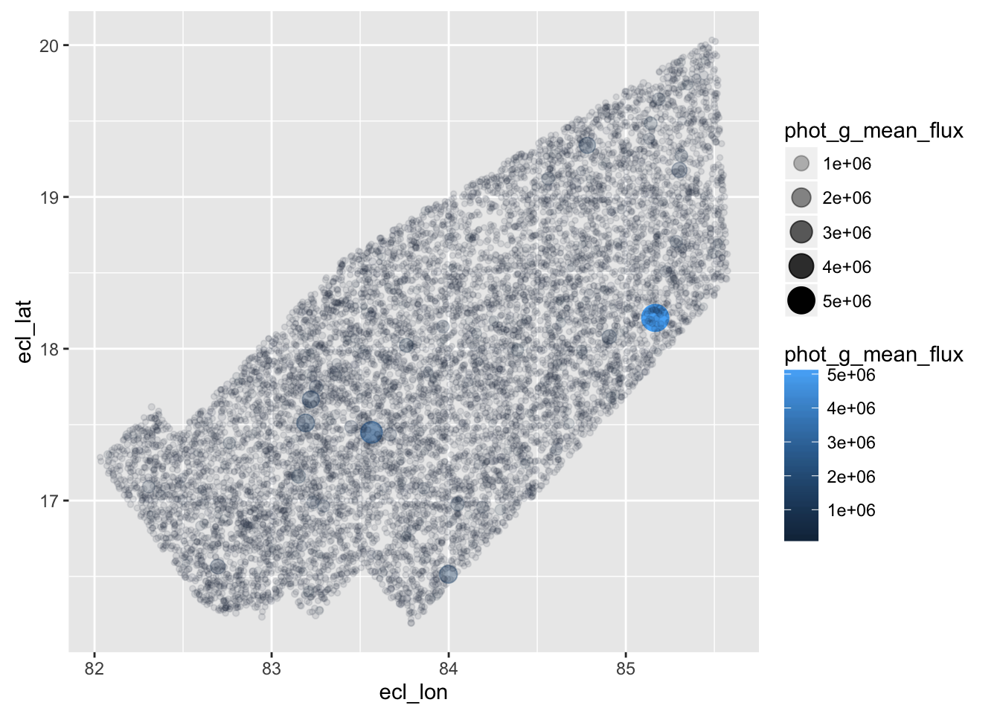

§ 17 Glyphs, Frames, and Scales
17.1 Glyphs and Data
In its original sense, in archeology, a glyph is a carved symbol.
| Heiroglyph | Mayan glyph |
|---|---|
 |
 |
17.2 Data Glyph
17.2.1 A data glyph is also a mark, e.g.


The features of a data glyph encodes the value of variables.
- Some are very simple, e.g. a dot:
- Some combine different elements, e.g. a pointrange:
- Some are complicated, e.g. a dotplot:
17.3 Data Glyph Properties: Aesthetics
Aesthetics are visual properties of a glyph.
- Aesthetics for points: location (x and y), shape, color, size, transparency
## Warning: Using size for a discrete variable is not advised.

- Each glyph has its own set of aesthetics.
17.4 Why “Aesthetic”?


17.5 Some Graphics Components
- glyph
- The basic graphical unit that represents one case. Other terms used include mark and symbol.
- aesthetic
- a visual property of a glyph such as position, size, shape, color, etc.
- may be mapped based on data values:
sex -> color - may be set to particular non-data related values:
color is black
- scale
- A mapping that translates data values into aesthetics.
- example: male -> blue; female -> pink
- frame
- The position scale describing how data are mapped to x and y
- guide
- An indication for the human viewer of the scale. This allows the viewer to translate aesthetics back into data values.
- Examples: x- and y-axes, various sorts of legends
17.6 Scales
The relationship between the variable value and the value of the aesthetic the variable is mapped to.
- Systolic Blood Pressure (SBP) has units of mmHg (millimeters of mercury)
- Position on the x-axis measured in distance, e.g. inches.
The conversion from SBP to position is a scale.
- Smoker is “never”, “former”, “current”
- Color is red, green, blue, …
The conversion from Smoker to color is a scale.
17.7 Guides
Guide: an indication to a human viewer of what the scale is. Example:
- Axis ticks and numbers

- Legends
| . | . |
|---|---|
 |
 |
- Labels on faceted graphics

17.8 Facets – using x and y twice

- x is determined by
sbpandsex - basically a separate frame for each
sex
17.9 Designing Graphics
Graphics are designed by the human expert (you!) in order to reveal information that’s latent in the data.
17.9.0.1 Design choices
- What kind of glyph, e.g. scatter, density, bar, … many others
- What variables constitute the frame. And some details:
- axis limits
- logarithmic axes, etc.
- What variables should be mapped to other aesthetics of the glyph.
- Whether to facet and with what variable.
More details, …, e.g. setting of aesthetics to constants
17.10 Good and Bad Graphics
Remember …
Graphics are designed by the human expert (you!) in order to reveal information that’s latent in the data.
Your choices depend on what information you want to reveal and convey.
Learn by reading graphics and determining which ways of arranging thing are better or worse.
A basic principle is that a graphic is about comparison. Good graphics make it easy for people to perceive things that are similar and things that are different. Good graphics put the things to be compared “side-by-side”, that is, in perceptual proximity to one another.
17.11 Perception and Comparison
In roughly descending order of human ability to compare nearby objects:
- Position
- Length
- Area
- Angle
- Shape (but only a very few different shapes)
- Color
Color is the most difficult, because it is a 3-dimensional quantity.
- color gradients — we’re good at - discrete colors — must be carefully selected.
17.12 Count the ways this graphic is bad
## Warning: Using size for a discrete variable is not advised.
17.13 Glyph-Ready Data
Glyph-ready data has this form:
- There is one row for each glyph to be drawn.
- The variables in that row are mapped to aesthetics of the glyph (including position)
Glyph-ready data
## sbp dbp sex smoker
## 1 129 75 male never
## 2 105 62 female never
## 3 122 72 male never
## 4 128 83 female former
## 5 123 90 male former
## 6 122 77 male currentMapping of data to aesthetics
sbp -> x
dbp -> y
smoker -> color
sex -> shapeScales determine details of
data -> aesthetic translation
17.14 Layers – building up complex plots
Each layer may have its own data, glyphs, aesthetic mapping, etc.

- one layer has points
- another layer has the curves
17.15 Stats: Data Transformations

- What are the glyphs, aesthetics, etc. for this plot?
- How is the data for this plot related to the “raw” data?
## sbp dbp sex smoker
## 1 129 75 male never
## 2 105 62 female never
## 3 122 72 male never
## 4 128 83 female former17.16 What’s Next
Eye-training
- recognize and describe glyphs, aesthetics, scales, etc.
- identify data required for a plot
Data wrangling
- get data into glyph-ready format (
dplyr,tidyr)
- get data into glyph-ready format (
Graphics construction
- start with: map variables to aesthetics interactively with
scatterGraphHelper(),barGraphHelper(),densityGraphHelper() - move on to: describe data, glyphs, aesthetics, etc. to R using
ggplot2
- start with: map variables to aesthetics interactively with